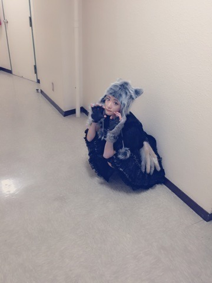

| 2015/11 04 Wed | 携帯がなんか画面に 変なの出てきて何回 も電源切って入れて を繰り返したが直ら ず絶望し今朝携帯ス トアに行っておしゃ れパーマの店員さん に直してもらいまし た。ありがとうおし ゃれパーマさん(^-^) |
という事で一安心してブログ書いてます(^-^)
昨日は
今話したい誰かがいる
の個別握手会でした〜ヽ(・∀・)ノ
前髪はまだニセモノですぜ。
みんなに褒められたこのワンピースはAymmyさんのワンピース(^-^)
初めてこのお店で買ったよ(^-^)
沢山の方に来て頂けてありがたや(´；ω；｀)
お陰でずっと笑顔でいれました(＾∀＾)
生駒ちゃんは生駒ちゃんのままでいいよ
と言って下さるあなた様がいるだけで充分幸せなのだと。
やっぱり自分の信じた道は途中で歩くのをやめたくないのです。
いつか自分の信じた想いが皆さんにも正しかったと言ってもらえる日が来るまで。
頑固者の生駒ちゃんは曲げないのである。
凄く遅れましたが日テレハロウィンLIVEの狼生駒ちゃんをご紹介します


やっほ〜(「･ω･)｢
前髪無しのオールバックなのです！！
ハロウィンが終わってしまった。
また来年ね〜

最近、
身体が重い。、
これは運動不足だきっと。
だから身体を鍛えないとっ！！
目標は越前リョーマ(＾∀＾)
引き締まった身体を目指す(＾∀＾)
運動して、ひきこもって、運動して！！
筋肉痛の時に運動しても逆効果なんだと最近知りましたヽ(・∀・)ノ
クリライまでに身体を鍛えるヽ(・∀・)ノ
頑張るぞ自分ヽ(・∀・)ノ
今日は顔文字がやたら多いブログだったヽ(・∀・)ノ
へばなっ☆彡
コメント(604)
2015/11/04 17:30